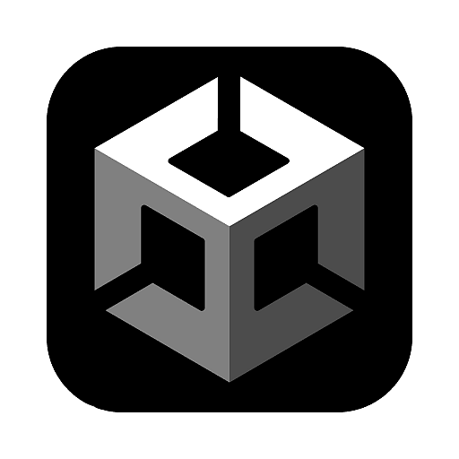
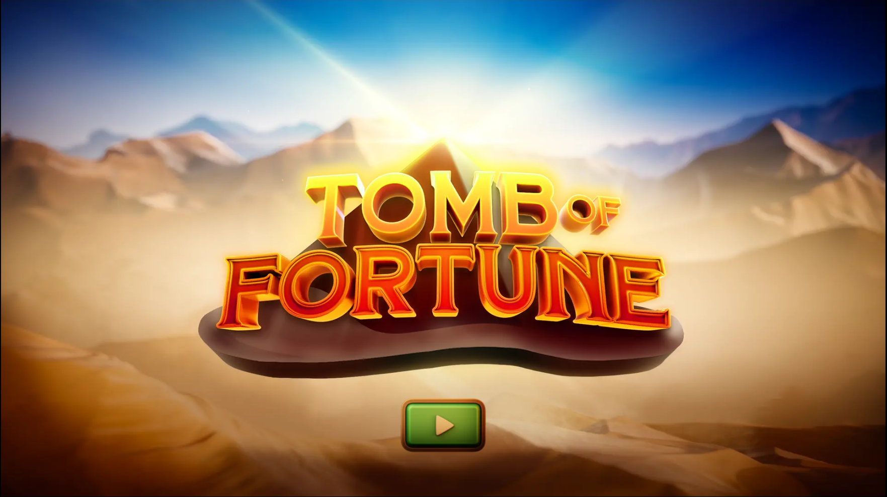
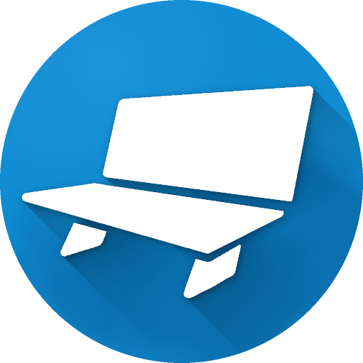

A selection of games and other projects for which I have done the music and sound design.
Headphones recommended!

Skyrim Online Trailer Music & Sound Design
Skills and deliverables
- Foley Recording
- Audio Editing
- Sound Design
- Music Composition
In this project I created the music and sound effects adapted to part of the footage from the Skyrim Online official trailer.
Steam Games OST Music & Sound Effects
Here you can find all the music and sound effects I have created for various Steam games.
Skills and deliverables
- Music Composition
- Audio Editing
- Sound Design
Mad Metal is a vehicle combat roguelite steam game, with a dystopian and post-apocalyptic setting. This title is developed by Mad Mechs Inc. and published by indie.io. For this project I got hired to compose the official soundtrack of the game. Find out more information about the game on the official Steam page.
Project Utgardr is a 3D realistic parkour game developed by Tronus Games. I am the lead sound designer for the project which is set to release early 2026. Below you will find a short audio adaptation. Find out more information about the game on the official Steam page.

Game Sound Design & Adaptive Music Integration - Unity & FMOD
Here you can find a compilation of Unity projects for which I worked covering the entire audio pipeline - recording foley, editing audio to create sound effects, creating environmental adaptations, editing dialogue, composing music for adaptive implementation and integrating all the audio assets using FMOD Studio.
Skills and deliverables
- Music Composition
- Sound Effects
- Foley Recording
- Audio Editing
- Dialogue Editing
- FMOD Audio Implementation
Sound Design - 3D Fantasy-Adventure
Music & Sound Design - First Person Shooter
Music & Sound Design - 3D Stealth Game
Music & Sound Design - 3D Viking Village
Music Composition for Games
This is a compilation of game music composition examples I did for various projects.
Skills and deliverables
- Music Composition
- Audio Editing
- Sound Design
- Asset Implementation
For this project, I composed a Fantasy-Medieval themed piece of music and adapted it over a game play footage of the game Enshrouded.
Thetr is a small project in early development for which I got hired to compose the music. This is the first track I made for it, with five more scheduled for next year.
For this project I was part of a game jam and I composed the background music for three sections of a top down pixel game called Epic Bar Quest. The game is available on Itch.io.
Mobile Games
In this section you can find game play footage of Orbit and Topoly - a couple of mobile games for which I was hired to create audio effects and music. Both projects were completed back in 2020
Skills and deliverables
- Foley Recording
- Audio Editing
- Sound Design
- Music Composition
Orbit is a mobile game released back in 2020 on the Google Play store. I was in charge of the entire audio production including sound effects, UI, and music. Unfortunately, the game is no longer available, but I still have this game play footage outlining my work.
Topoly is a low poly endless run, fast paced indie game made by Quadratic Games available for Windows, Linux, and Android. I did the sound design and ambient audio for the game as part of my portfolio work back in 2020. Topoly is available to buy online and you can find me in the credits under my alias Idem Grey. Here is a lik for Topoly by Quadratic Games.
Online Casino Slots
This is a compilation of my work on various online casino slot games, where I was responsible for composing the music and creating all the sound effects.
Skills and deliverables
- Music Composition
- Foley Recording
- Audio Editing
- Sound Design

Tomb of Fortune is a skill based casino game developed by 711casino.be for which I was hired to compose the music and create all the sound effects. You can test the free version of the game by clicking the image above or just follow this link
This is a task I was sent by Backseat gaming as part of my application process for a composer/sound designer role. I managed to deliver the project scope up to the expectations which ultimately got me the role and I got on board with Backseat.
For this project, I was sent a short game play video and was tasked to compose the music and create all the sound effects as part of my application process as a music composer/sound designer for Dreamshot. This is the final result which got me to the final interview round. Unfortunately the didn't choose to proceed with me despite the great match.
Fishing Theme
Halloween Theme
For this project I was hired on Upwork to deliver a number of different tracks and sound effects for a couple of online slot games. In order to deliver all the files, I had to follow strict guidelines and references. On the left you can hear the fishing themed project and on the right - the halloween themed project.

Miscellaneous
Here you can find some videos with miscellaneous sounds. These are mainly submissions for games that are still in the very early production stage.
Skills and deliverables
- Foley Recording
- Audio Editing
- Sound Design